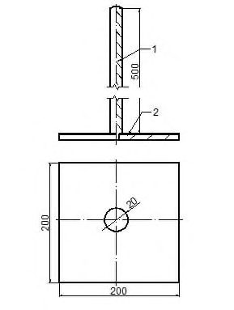
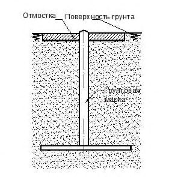
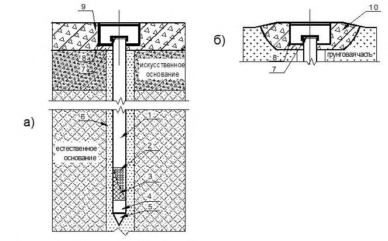
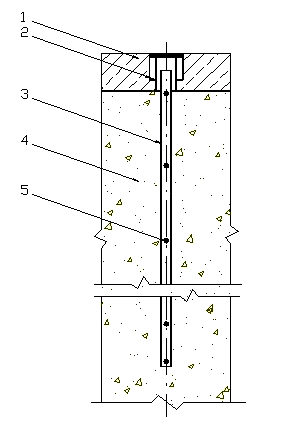
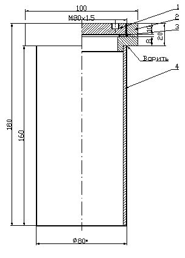

СП 489.1325800.2020 «Аэродромы. Геотехнический мониторинг при эксплуатации»
О документе: разработчики, утверждение, регистрация, ключевые слова
СВОД ПРАВИЛ
СП 489.1325800.2020
- 1 ИСПОЛНИТЕЛИ -ЗАО «ПРОМТРАНСНИИПРОЕКТ», АО «НТК «АЭРОТЕХНИЧЕСКИЙ ЦЕНТР», ФГУП ГПИ и НИИГА «Аэропроект»
2 ВНЕСЕН Техническим комитетом по стандартизации ТК 465 «Строительство»
- 3 ПОДГОТОВЛЕН к утверждению Департаментом градостроительной деятельности и архитектуры Министерства строительства и жилищно-коммунального хозяйства Российской Федерации (Минстрой России)
- 4 УТВЕРЖДЕН приказом Министерства строительства и жилищно-коммунального хозяйства Российской Федерации от 23 декабря 2020 г. № 834/пр и введен в действие с 24 июня 2021 г.
- 5 ЗАРЕГИСТРИРОВАН Федеральным агентством по техническому регулированию и метрологии (Росстандарт)
6 ВВЕДЕН ВПЕРВЫЕ
В случае пересмотра (замены) или отмены настоящего свода правил соответствующее уведомление будет опубликовано в установленном порядке. Соответствующая информация, уведомление и тексты размещаются также в информационной системе общего пользования -на официальном сайте разработчика (Минстрой России) в сети Интернет
© Минстрой России, 2020
Настоящий нормативный документ не может быть полностью или частично воспроизведен, тиражирован и распространен в качестве официального издания на территории Российской Федерации без разрешения Минстроя России
СП 489.1325800.2020
Дата введения - 2021-06-24
УДК [625.717]
ОКС 93.120
Ключевые слова: аэродром, геотехнический мониторинг, искусственные покрытия
Руководитель организации-разработчика
ЗАО «ПРОМТРАНСНИИПРОЕКТ»
| Исполнительный директор | Исполнительный директор | А.Ю. Эглескалн |
|---|---|---|
| Руководитель разработки | Зам. директора по науке | Л.А. Андреева |
| Исполнитель | Начальник отдела комплексных исследований, стандартизации и логистики | И.П. Потапов |
Введение
Настоящий свод правил разработан в целях обеспечения соблюдения требований Федерального закона от 30 декабря 2009 г. № 384-ФЗ «Технический регламент о безопасности зданий и сооружений». Кроме того, применение настоящего свода правил обеспечивает соблюдение федеральных законов от 27 декабря 2002 г. № 184-ФЗ «О техническом регулировании», от 22 июля 2008 г. № 123-ФЗ «Технический регламент о требованиях пожарной безопасности».
Свод правил разработан авторским коллективом ЗАО «ПРОМТРАНСНИИПРОЕКТ» (руководитель темы - д-р техн. наук Л.А. Андреева , И.П. Потапов , И.В. Музыкин, А.О. Иванова ), АО «НТК «АЭРОТЕХНИЧЕСКИЙ ЦЕНТР» (руководитель темы - канд. техн. наук В.Н. Вторушин , канд. техн. наук А.Г. Полянкин , канд. техн. наук Д.А. Смирно в, А.Е. Григорьев ), ФГУП ГПИ и НИИ ГА «Аэропроект» (руководитель темы - канд. техн. наук М.Д. Суладзе , канд. техн. наук Н.С. Ледовская , Ю.Б. Скоробогатая , А.Ю. Бочарова ).
1Область применения
Настоящий свод правил распространяется на геотехнический мониторинг аэродромов при их эксплуатации.
2Нормативные ссылки
В настоящем своде правил использованы нормативные ссылки на следующие документы:
ГОСТ 17624-2012 Бетоны. Ультразвуковой метод определения прочности
ГОСТ 24846-2012 Грунты. Методы измерения деформаций оснований зданий и сооружений
ГОСТ 25358-2012 Грунты. Метод полевого определения температуры
ГОСТ 31937-2011 Здания и сооружения. Правила обследования и мониторинга технического состояния
ГОСТ Р ИСО 5725-1-2002 Точность (правильность и прецизионность) методов и результатов измерений. Часть 1. Основные положения и определения
СП 22.13330.2016 «СНиП 2.02.01-83* Основания зданий и сооружений» (с изменениями № 1, № 2, № 3)
СП 25.13330.2012 «СНиП 2.02.04-88 Основания и фундаменты на вечномерзлых грунтах» (с изменениями № 1, № 2, № 3, № 4)
СП 121.13330.2019 «СНиП 32-03-96 Аэродромы»
АЭРОДРОМЫ
Геотехнический мониторинг при эксплуатации
Aerodromes. Geotechnical monitoring during operation
СП 250.1325800.2016 Здания и сооружения. Защита от подземных вод
СП 305.1325800.2017 Здания и сооружения. Правила проведения геотехнического мониторинга при строительстве
СП 446.1325800.2019 Инженерно-геологические изыскания для строительства. Общие правила производства работ
Примечание - При пользовании настоящим сводом правил целесообразно проверить действие ссылочных документов в информационной системе общего пользования - на официальном сайте федерального органа исполнительной власти в сфере стандартизации в сети Интернет или по ежегодному указателю «Национальные стандарты», который опубликован по состоянию на 1 января текущего года, и по выпускам ежемесячного информационного указателя «Национальные стандарты» за текущий год. Если заменен ссылочный документ, на который дана недатированная ссылка, то рекомендуется использовать действующую версию этого документа с учетом всех внесенных в данную версию изменений. Если заменен ссылочный документ, на который дана датированная ссылка, то рекомендуется использовать версию этого документа с указанным выше годом утверждения (принятия). Если после утверждения настоящего свода правил в ссылочный документ, на который дана датированная ссылка, внесено изменение, затрагивающее положение, на которое дана ссылка, то это положение рекомендуется применять без учета данного изменения. Если ссылочный документ отменен без замены, то положение, в котором дана ссылка на него, рекомендуется применять в части, не затрагивающей эту ссылку. Сведения о действии сводов правил целесообразно проверить в Федеральном информационном фонде стандартов.
3Термины и определения
В настоящем своде правил применены термины и определения по ГОСТ 31937, СП 121.13330 и СП 305.1325800, а также следующие термины с соответствующими определениями:
- 3.1автоматизированный геотехнический мониторинг
- Геотехнический мониторинг, при котором фиксация контролируемых параметров осуществляется в автоматическом режиме.
- 3.2глубинный репер
- Геодезический знак, основание которого устанавливается на скальные, полускальные или другие коренные практически несжимаемые грунты.
- 3.3грунтовый репер
- Геодезический знак, основание которого устанавливается ниже глубины промерзания, оттаивания или перемещения грунта.
- 3.4датчик уровня воды
- Вид геотехнического оборудования, применяемый для измерения уровня грунтовых вод.
- 3.5деформационная марка
- Геодезический знак, жестко закрепленный на конструкции сооружения и меняющий вместе с ней свое планово-высотное положение вследствие осадки, просадки, подъема, сдвига.
- 3.6дефект
- Отдельное несоответствие конструкции аэродромного покрытия или элемента водоотводной и дренажной системы параметрам, установленным нормативными требованиями или проектом.
- 3.7жизненный цикл здания или сооружения
- Период, в течение которого осуществляются инженерные изыскания, проектирование, строительство (в том числе консервация), эксплуатация (в том числе текущие ремонты), реконструкция, капитальный ремонт, снос здания или сооружения.Источник: 1, статья 2, часть 2, пункт 5
- 3.8повреждение
- Любое нарушение целостности конструкции аэродромного покрытия или элемента водоотводной и дренажной системы, полученное при строительстве или в процессе эксплуатации.
4Общие положения
К задачам, решаемым в ходе исследовательского мониторинга, относятся:
- выявление причин образования дефектов, повреждений и прогнозирование их развития;
- исследование эксплуатационного воздействия воздушных судов (ВС) на элементы аэродрома, имеющих нагрузку, превышающую расчетную, или в случае снижения несущей способности искусственных покрытий в результате ухудшения физико-механических характеристик грунтов основания;
- исследование работы искусственных покрытий с применением новых конструктивно-технологических решений или материалов.
Основной задачей, решаемой в ходе контрольного мониторинга, является предупреждение возникновения неудовлетворительного состояния искусственных покрытий элементов аэродрома, которые могут быть вызваны чрезвычайными обстоятельствами: природными явлениями и техногенными процессами на территории аэродрома и прилегающих территориях.
- при разработке проекта нового строительства или реконструкции аэродромов, расположенных на территориях с возможными изменениями состояния окружающей среды, проявлениями аномалий и негативных процессов природно-техногенного характера;
- по результатам визуального или инструментального обследования технического состояния эксплуатируемого объекта в связи с уже проявившимися процессами, повлиявшими на его техническое состояние.
Решение о проведении мониторинга объекта может быть принято на любом из этапов его жизненного цикла.
СП 489.1325800.2020
- разработка программы мониторинга и утверждение ее заказчиком;
- согласование схемы размещения оборудования с заказчиком и (или) эксплуатирующей организацией;
- монтаж необходимого оборудования;
- калибровка установленного оборудования и пусконаладочные работы;
- проведение нулевого (базового) цикла измерений;
- проведение мониторинга (периодического или постоянного);
- анализ результатов, составление отчета и передача всех материалов по итогам мониторинга заказчику или эксплуатирующей организации;
- демонтаж оборудования (при необходимости).
- в ручном режиме, то есть с участием человека в каждом цикле измерений (наблюдений);
- в автоматическом режиме (автоматическая передача информации) в соответствии с приложением А, исключающем участие человека в снятии и передаче результатов измерений.
Необходимая степень автоматизации геотехнического мониторинга определяется программой мониторинга исходя из возможности обеспечения круглогодичного доступа к измерительному оборудованию на аэродроме.
5Требования к проведению работ по геотехническому мониторингу
5.1Программа мониторинга
- нагрузки и интенсивность воздействия от ВС;
- особенности прилегающей к аэродрому территории;
- опыт эксплуатации аэродромов, расположенных в аналогичных инженерно-геологических и климатических условиях.
- цели и задачи мониторинга;
- основные характеристики объекта мониторинга;
- перечень видов работ и элементов аэродрома, на которых необходимо проводить измерения;
- применяемые средства измерений, приборы, оборудование, порядок и места их установки, порядок измерений и оценку точности измерений;
- систему периодичности измерений и сроки выполнения работ;
- методику обработки данных измерений и анализа результатов;
- мероприятия по обеспечению сохранности установленных марок и приборов от повреждений, вандализма и хищения.
- фиксация контролируемых параметров должна выполняться как для наиболее опасных, так и для характерных (стабильных) участков элементов аэродрома;
- выбранные методы и точность измерений должны обеспечивать достоверность получаемых результатов и соответствовать точности нормативных и принятых проектных значений;
- все проводимые наблюдения и измерения должны быть увязаны между собой во времени, а их периодичность должна определяться интенсивностью (скоростью) и длительностью протекания процессов изменения контролируемых параметров.
5.2Контролируемые параметры
Для эксплуатируемых аэродромов состав контролируемых параметров назначают в зависимости от выявленных при обследовании технического состояния элементов аэродрома дефектов и повреждений, способных при дальнейшем развитии привести к выводу из эксплуатации того или иного элемента аэродрома.
- состав, характер и параметры дефектов и повреждений поверхности искусственных покрытий;
- вертикальные и горизонтальные перемещения контрольных точек поверхности искусственных покрытий элементов аэродрома (деформационные марки, продольные и поперечные профили, углы плит жестких искусственных покрытий);
- вертикальные и горизонтальные перемещения поверхностных грунтовых марок;
- вертикальные перемещения поверхности искусственных покрытий в контрольных точках при испытании покрытий статической нагрузкой;
- уровень подземных вод;
- температура грунтов и грунтовых вод в основании искусственных покрытий и на прилегающих грунтовых участках;
- иные параметры, назначаемые в зависимости от конструктивных особенностей объекта, инженерно-геологических условий территории и характера проявившихся негативных процессов.
5.3Сроки и периодичность выполнения работ по мониторингу
6Методы геотехнического мониторинга
6.1Визуально-инструментальные методы
Фиксация параметров дефектов должна выполняться с использованием ручных и автоматизированных средств измерений.
6.2Геодезические методы
- вертикальные перемещения (осадки, вертикальные сдвиги, просадки и т. п.);
- горизонтальные перемещения (сдвиги).
- определение участков элементов аэродрома и прилегающих грунтовых участков, подверженных наибольшим отклонениям от проектного или первоначального положения;
- выявление величины и направления деформационных процессов;
- выявление закономерностей, позволяющих спрогнозировать дальнейшее развитие деформаций;
- контроль за процессами в грунтах основания элементов аэродрома.
- разработка соответствующего раздела программы мониторинга;
- определение мест расположения и установка опорных геодезических знаков высотной и плановой основы вне зоны возможных деформаций;
- установка деформационных марок в покрытиях, поверхностных грунтовых марок на прилегающих участках летного поля;
- осуществление высотной и плановой привязки установленных опорных геодезических знаков;
- проведение нулевого цикла измерений положения контролируемых деформационных марок и поверхностных грунтовых марок;
- периодические геодезические измерения вертикальных и горизонтальных перемещений в соответствии с разделом программы мониторинга;
- обработка и анализ результатов наблюдений;
- составление отчетной документации.
Деформационные марки на покрытиях следует располагать с шагом 25-30 м, на проблемных участках - с шагом, кратным длине плиты (для жестких покрытий) или равным 5 м (для нежестких покрытий).
Основные геодезические методы и средства измерений, применяемые при геотехническом мониторинге в зависимости от контролируемых параметров, представлены в таблице 6.1.
Таблица 6.1 Основные геодезические методы и средства измерений, применяемые при геотехническом мониторинге
| Методы геодезического мониторинга | Средства измерений и регистрации данных | Контролируемый параметр | Возможность автоматизации |
|---|---|---|---|
| Геометрическое нивелирование коротким лучом визирования | Оптический нивелир | Вертикальные перемещения элементов аэродромной конструкции, грунтовой части | Отсутствует |
| Геометрическое нивелирование коротким лучом визирования | Цифровой нивелир | Вертикальные перемещения элементов аэродромной конструкции, грунтовой части | Отсутствует |
| Тригонометрическое нивелирование | Электронный тахеометр | Вертикальные перемещения элементов аэродромной конструкции, грунтовой части | Имеется |
| Тригонометрическое нивелирование | Оптический теодолит | Вертикальные перемещения элементов аэродромной конструкции, грунтовой части | Имеется |
| Метод относительных спутниковых измерений с использованием Глобальной навигационной спутниковой системы | Автоматизированные аппаратно- программные системы, состоящие из приемников (роверов) и базовых станций | Вертикальные перемещения элементов аэродромной конструкции, грунтовой части | Имеется |
| Геодезические наблюдения по кустам глубинных реперов | Оптический нивелир | Вертикальные перемещения грунтового массива по глубине | Отсутствует |
| Геодезические наблюдения по кустам глубинных реперов | Цифровой нивелир | Вертикальные перемещения грунтового массива по глубине | Отсутствует |
| Геодезические наблюдения по кустам глубинных реперов | Электронный тахеометр | Вертикальные перемещения грунтового массива по глубине | Имеется |
| Метод полигонометрии | Электронный тахеометр | Горизонтальные перемещения поверхности покрытий, грунта, склонов водоотводных и нагорных канав, высоких насыпей | Имеется |
| Метод полигонометрии | Оптический теодолит | Горизонтальные перемещения поверхности покрытий, грунта, склонов водоотводных и нагорных канав, высоких насыпей | Отсутствует |
| Метод отдельных направлений | Электронный тахеометр | Горизонтальные перемещения поверхности покрытий, грунта, склонов водоотводных и нагорных канав, высоких насыпей | Имеется |
| Метод отдельных направлений | Оптический теодолит | Горизонтальные перемещения поверхности покрытий, грунта, склонов водоотводных и нагорных канав, высоких насыпей | Отсутствует |
- сведения о наличии пунктов государственной геодезической сети на аэродроме и прилегающей территории;
- данные о системе координат и высотных отметок аэродрома;
- описание мест закладки геодезических знаков, обоснование выбора типа знаков;
- предварительную схему измерительной сети;
- требуемую точность измерений;
- методы измерений горизонтальных и вертикальных перемещений;
- применяемые оборудование и инструмент;
- периодичность проведения измерений.
- план расположения измерительного инструмента, контролируемых точек (призм), точек обратной засечки (вне зоны влияния контролируемого объекта);
- схему крепления мониторинговых призм (если это не будет создавать препятствий движению ВС и аэродромной техники);
- конструктивную схему оснащения базовой точки, в которой расположен роботизированный тахеометр.
- отчет по результатам нулевого цикла, включающий исполнительные схемы опорной геодезической сети и расположения деформационных марок и поверхностных грунтовых марок, первичные результаты измерений, являющиеся «нулевыми» для последующих измерений;
- промежуточные отчеты (информационные справки), предоставляемые в процессе ведения измерений, содержащие пояснительную записку и результаты измерений в виде таблиц и графиков;
СП 489.1325800.2020
- окончательный отчет по результатам всех геодезических измерений.
6.3Параметрические методы
- вертикальных и горизонтальных деформаций (послойные осадки грунтов в теле основания искусственных покрытий; горизонтальные и вертикальные перемещения грунта в основании по глубине);
- напряжений (в естественном и искусственном основании покрытий по глубине).
Таблица 6.2 Основные средства измерений параметрических методов в зависимости от контролируемых параметров
| Контролируемый параметр | Средства измерений и регистрации данных | Возможность автоматизации |
|---|---|---|
| Послойные осадки (просадки) грунтов оснований | Струнный экстензометр | Имеется |
| Послойные осадки (просадки) грунтов оснований | Оптоволоконный экстензометр | Имеется |
| Послойные осадки (просадки) грунтов оснований | Портативные горизонтальные инклино- метры | Отсутствует |
| Послойные осадки (просадки) грунтов оснований | Оптиковолоконные инклинометры | Имеется |
| Напряжения | Струнные датчики давления | Имеется |
| Напряжения | Электрические датчики давления | Имеется |
СП 489.1325800.2020 допустимые значения горизонтальных перемещений устанавливают в программе мониторинга на основе геотехнического прогноза. В каждом цикле инклинометрических измерений положение верха инклинометрических труб следует измерять геодезическим способом.
При измерениях напряжений в основании земляного полотна измерительные датчики давления устанавливают группами (три датчика, расположенные ортогонально).
Число контролируемых точек, а также предельно допустимые значения контролируемых параметров устанавливают в программе мониторинга на основе результатов геотехнического прогноза.
СП 489.1325800.2020
- обеспечение необходимого уровня безопасности эксплуатации ВС, сохранности при работе аэродромных машин и механизмов;
- механическое, гидромеханическое или термомеханическое взаимодействия между компонентами системы геотехнических измерений (например, датчиками, линиями связи) и средой, в которой установлены компоненты;
- условия окружающей среды (давление грунта; электромагнитные помехи), которые могут влиять на установленные измерительные датчики и приборы;
- уязвимость информационной связи внутри системы мониторинга (длинные измерительные линии).
- перечень контролируемых параметров и оборудования;
- схемы расположения измерительных точек и устанавливаемых в них датчиков и приборов;
- способ установки датчиков и приборов;
- предельные значения контролируемых параметров;
- порядок и периодичность проведения измерений;
- форма отчетности.
6.4Геофизические методы
По результатам геофизических измерений выявляются и оцениваются изменения напряжено-деформированного состояния грунтов естественного и искусственного основания, их сплошности и целостности.
- контроль напряжено-деформированного состояния грунтов основания элементов аэродрома в результате эксплуатационных, техногенных и природноклиматических воздействий;
- контроль состояния контакта между слоями искусственного покрытия и основания, в том числе в части наличия размеров и расположения зон ослабленного контакта и зон отсутствия такого контакта (пустот);
- выявление и контроль активных проявлений деформационных процессов в искусственных покрытиях и основаниях, связанных с образованием и развитием микрои макротрещин во вмещающем грунтовом основании, суффозионными процессами, сдвижениями грунтов, изменениями гидрогеологического режима и другими процессами;
- выявление и контроль зон структурных нарушений, возникающих в результате дополнительных нагрузок и воздействий;
- контроль неблагоприятных геологических процессов (процессы карстообразования, суффозии, термокарста и т. д.).
- подготовка мест измерений в основании и конструкциях искусственного покрытия;
- монтаж измерительного оборудования;
- проведение измерений;
- обработка результатов измерений.
Таблица 6.3 Основные методы геофизических наблюдений, применяемых при геотехническом мониторинге
| Метод | Технология наблюдений | Измеряемые параметры | Решаемые задачи, особые условия |
|---|---|---|---|
| Электромагнитные методы | Электромагнитные методы | Электромагнитные методы | Электромагнитные методы |
| Радиолокационное зондирование | По поверхности | Характеристики электромагнитных импульсов, возбуждаемых внешними устройствами и отраженных от границ сред с различной диэлектрической проницаемостью | Фиксация в грунтовом массиве изменений границ зон повышенной влажности, зон с различной |
| Электропрофилирование | По поверхности | Кажущиеся электрические сопротивления и удельные электрические сопротивления | плотностью и т. д. |
| Вертикальное электрическое зондирование | По поверхности | Кажущиеся электрические сопротивления и удельные электрические сопротивления | |
| Электрокаротаж сопротивлений, токовый каротаж | В скважинах | Кажущиеся электрические сопротивления и удельные электрические сопротивления |
СП 489.1325800.2020
| Метод естественного электромагнитного излучения | По поверхности, в шурфах, в скважинах | Амплитудные и частотные характеристики импульсов электромагнитного излучения | Оценка изменений напряженного состояния участков грунтового массива |
|---|---|---|---|
| Радиоволновое просвечивание | В скважинах, по поверхности, смешанное | Изучение компонентов электромагнитного поля при возбуждении в одной скважине и приеме в другой или на поверхности | Оценка изменений свойств грунтов под покрытиями и на грунтовой части |
| Сейсмоакустические методы | Сейсмоакустические методы | Сейсмоакустические методы | Сейсмоакустические методы |
| Корреляционный метод преломленных волн поверхности, метод отраженных волн в модификации общей глубинной точки | По поверхности | Изучение динамических и кинематических упругих колебаний в среде, вызванных искусственными источниками колебаний | Оценка изменений свойств грунтов под покрытиями и на грунтовой части |
| Сейсмический каротаж, вертикальное сейсмическое профилирование | В скважинах | Изучение динамических и кинематических упругих колебаний в среде, вызванных искусственными источниками колебаний | Оценка изменений свойств грунтов под покрытиями и на грунтовой части |
6.5Гидрогеологические методы
Типовая конструкция гидрогеологической скважины приведена в приложении В.
В программе определяются:
- число скважин и места их расположения;
- конструкция скважин;
- способы бурения;
- описание используемых датчиков, глубины (горизонтов) их установки;
- периодичность циклов наблюдений за УПВ;
СП 489.1325800.2020
- продолжительность мониторинга с указанием условий его прекращения.
Автоматизация мониторинга предполагает автоматическое снятие показаний с датчиков с заданными последовательностью и частотой, передачу на удаленный сервер для преобразования, обработки и регистрации.
Замеры уровней воды в межень следует проводить через 5-10 сут. В периоды паводков, снеготаяния, ливневых или продолжительных дождей замеры уровня воды в карстовых областях, на участках с неглубоким залеганием уровня грунтовых вод следует проводить ежедневно до прекращения влияния факторов, влияющих на изменения УПВ.
- графики изменения УПВ во времени;
- анализ и оценка причин, вызвавших изменения УПВ;
- выводы по результатам наблюдений;
- рекомендации по сохранению работоспособности наблюдательных скважин.
6.6Температурные методы
Типовая конструкция термометрической скважины представлена в приложении Г.
Инструментальная погрешность приборов для полевых измерений температуры грунтов не должна превышать:
± 0,1 °С - в диапазоне измеряемых температур ±3 °С;
± 0,2 °С - в диапазоне температур свыше ±3 °С до ±10 °С включительно;
± 0,3 °С - в диапазоне температур свыше ±10 °С.
- при мониторинге ММГ, используемых по принципу I - два раза в год: в период максимального оттаивания (при наступлении отрицательных температур воздуха) и в период максимального промерзания (при наступлении положительных температур воздуха), по принципу II (допущение оттаивания грунтов в период эксплуатации) - в первый год эксплуатации один раз в квартал, в последующие годы - один раз в год;
- при мониторинге в районах распространения пучинистых грунтов - один раз в 10 сут по достижении максимальной глубины промерзания.
- данные измерений в виде графиков и таблиц;
- анализ изменения температурного режима грунтов;
- выводы по результатам наблюдений;
- рекомендации по сохранению температурного режима в случае его изменения.
7Геотехнический мониторинг на аэродромах, расположенных в особых условиях
При выборе методов проведения геотехнического мониторинга на аэродромах с особыми инженерно-геологическими условиями и в районах распространения ММГ, а также в сейсмически опасных регионах и территориях, подверженных карстообразованию, следует руководствоваться таблицей 7.1.
Таблица 7.1 Основные методы проведения геотехнического мониторинга на аэродромах, расположенных в особых условиях
| Территория расположения аэродрома, особые свойства грунтов | Контролируемые параметры | Разделы, пункты настоящего свода правил по методам и средствам контроля |
|---|---|---|
| Территории распространения просадочных и набухающих грунтов | Дефекты и повреждения искусственных покрытий | 6.1 |
| Территории распространения просадочных и набухающих грунтов | Осадки грунтовой части, осадки и просадки покрытия | 6.2 |
| Территории распространения просадочных и набухающих грунтов | Влажность грунтов | 6.3, 6.4 |
| Территории распространения просадочных и набухающих грунтов | Плотность грунтов | 6.3, 6.4 |
| Территории распространения просадочных и набухающих грунтов | УПВ | 6.5 |
| Территории распространения пучинистых грунтов | Дефекты и повреждения искусственных покрытий | 6.1 |
| Территории распространения пучинистых грунтов | Локальные участки подъема поверхности покрытий с образованием трещин и уступов. Взбугривания и подъем грунтовой части летного поля | 6.2 |
| Территории распространения пучинистых грунтов | Влажность грунтов Плотность грунтов | 6.3, 6.4 |
| Территории распространения пучинистых грунтов | УПВ | 6.5 |
| Районы распространения ММГитерритории, подверженные термокарсту | Дефекты и повреждения искусственных покрытий | 6.1 |
| Районы распространения ММГитерритории, подверженные термокарсту | Локальные участки просадки поверхности покрытий с образованием трещин и уступов | 6.2, 6.3, 6.4, 6.6 |
| Сейсмически опасные регионы и территории, подверженные карстообразованию | Дефекты и повреждения искусственных покрытий | 6.1 |
| Сейсмически опасные регионы и территории, подверженные карстообразованию | Локальные участки просадки поверхности покрытий с образованием трещин и уступов. Подвижка плит покрытия | 6.2, 6.3, 6.4, 6.6 |
8Результаты геотехнического мониторинга
8.1Анализ результатов геотехнического мониторинга
8.2Алгоритм действий в случае выявления возможности наступления аварийных ситуаций
При выявлении динамики изменения контролируемых параметров, свидетельствующей о возможности наступления аварийной или предаварийной ситуации, угрожающей безопасной эксплуатации ВС, следует:
- незамедлительно проинформировать заказчика или эксплуатирующую организацию о необходимости оперативного принятия решения по обеспечению безопасной эксплуатации ВС на аэродроме;
- увеличить частоту проведения измерений до момента установления причин наступления аварийной или предаварийной ситуации, их устранения и восстановления прогнозируемой динамики изменения измеряемых значений величин. При этом на проблемных участках возможно увеличение числа точек, видов и периодичности измерений;
- разработать рекомендации по комплексу первоочередных мероприятий, направленных на предотвращение развития аварийной или предаварийной ситуации на объекте;
- установить причины выявленных опасных отклонений контролируемых параметров, в том числе с помощью проведения дополнительных инженерных изысканий;
- разработать рекомендации по обеспечению технической безопасности и эксплуатационной надежности элементов аэродрома.
8.3Отчетная документация по геотехническому мониторингу
АПриложение А. Автоматизированный геотехнический мониторинг
А.1 Необходимость и степень автоматизации геотехнического мониторинга на аэродроме следует определять при соответствующем техникоэкономическом обосновании. Систему автоматизированного мониторинга рекомендуется проектировать с возможностью модульной интеграции контрольно-измерительного оборудования мониторинга, позволяющей:
- добавление модулей обработки данных, аналогичных уже интегрированному мониторинговому оборудованию, с различными характеристиками и особенностями настроек;
- разработку и интеграцию нового алгоритма обработки и вывода данных для неиспользуемого ранее типа оборудования для мониторинга;
- интеграцию как автоматизированного, так и ручного способа получения данных с датчиков и устройств.
Система геотехнического мониторинга должна предусматривать оперативный доступ к вспомогательным материалам на объекте (отчеты, регламенты, справки и т. д.).
А.2 Система должна обеспечивать удаленный доступ к данным мониторинга через сеть Интернет. Контрольно-измерительное оборудование должно быть подключено к сети Интернет.
А.3 Данные могут передаваться как с применением кабельных линий, так и с помощью беспроводных систем связи. Линии связи должны обеспечивать бесперебойную и помехоустойчивую передачу данных на протяжении всего периода эксплуатации системы. Организация передачи данных между отдельными элементами измерительной системы возможна как с использованием кабельных линий, так и с помощью беспроводных систем связи.
А.4 При организации передачи данных по каналам связи необходимо предусмотреть создание единого диспетчерского центра для сбора и обработки информации.
При отсутствии единого диспетчерского центра для каждой измерительной точки предусматривается оснащение шкафов с оборудованием, выполняющим обработку измерений и передачу информации на выделенный сервер.
А.5 Блоки сбора-передачи информации должны предусматривать возможность оперативного изменения параметров для возможного корректирования системы.
А.6 Автоматическая фиксация наблюдаемых параметров может проводиться без создания единой автоматизированной системы с помощью локальных систем, состоящих из отдельных приборов, фиксирующих измеряемые параметры с заданной частотой опроса, и накопителей данных.
А.7 Необходимо предусматривать возможность интеграции измерительных датчиков системы геотехнического мониторинга, устанавливаемых в покрытиях и грунтах основания.
А.8 Программное обеспечение следует выбирать в соответствии с требованиями используемых методов мониторинга.
БПриложение Б. Конструкции деформационных марок
Б.1 Для установки в покрытия из цементобетона и сборные покрытия из плит ПАГ в качестве деформационных марок при длительных наблюдениях следует применять распорные дюбели из нержавеющей стали или латуни с болтами, имеющими полукруглую или цилиндрическую головку. Дюбели устанавливают в заранее подготовленные отверстия. Глубина отверстий должна обеспечивать ввинчивание болта заподлицо с поверхностью покрытия (на 5-10 мм ниже поверхности). Монтаж дюбелей следует выполнять с применением клеевых составов на основе эпоксидных компаундов или коллоидного цементного клея.
Б.2 Рядом с маркой наносят краской номер в соответствии с планом расположения марок.
Б.3 «Пятка» нивелирной рейки или отражателя должна быть оборудована сферической головкой для точной установки на марку.
Б.4 На асфальтобетонных и цементобетонных (при коротких сроках наблюдения) покрытиях точки нивелирования следует обозначать эмалями для дневной маркировки. Точка обозначается перекрестием двух взаимно перпендикулярных линий шириной 10-20 мм и длиной не менее 100 мм. Рядом с маркой наносят краской номер в соответствии с планом расположения марок.
Б.5 Точки нивелирования и номера марок периодически обновляют по мере необходимости.
Б.6 Конструкция грунтовой марки и схема установки представлены на рисунках Б.1 и Б.2.
Б.7 На отмостке рядом с грунтовой маркой наносят краской номер в соответствии с планом расположения марок.
Б.8 Места установки грунтовых марок обозначают гибким маячком для их сохранения и легкого нахождения в условиях снегозаноса или травостоя.

1 - площадка; 2 - стержень с оголовком
Рисунок Б.1 - Конструкция грунтовой деформационной марки
Рисунок Б.2 - Схема установки грунтовой деформационной марки

ВПриложение В. Типовая конструкция гидрогеологической скважины
В.1 Наблюдательная гидрогеологическая скважина состоит из фильтровой колонны (трубы), затрубной обсыпки фильтра и оголовка (рисунок В.1).
Рисунок В.1 - Конструкция наблюдательной гидрогеологической скважины

В.2 Фильтровая колонна состоит из фильтра, отстойника и надфильтровой глухой трубы. Для изготовления колонны используют трубы диаметром 73-108 мм. Меньшие диаметры не рекомендуются из-за невозможности использования оборудования, применяемого при прокачке скважин, и из-за уменьшения сроков их эксплуатации, связанного с заилением фильтров, трудностью их очистки и ремонта.
В.3 Фильтр представляет собой перфорированную трубу со скважностью 15 %-20 %, обернутую сеткой и обсыпанную по внешней поверхности песком или гравием. Длина фильтра составляет 2-3 м, отстойника - 1 м. Для сыпучих и связных водоносных грунтов средний диаметр материала обсыпки должен быть в 8-12 раз больше среднего диаметра грунтов в интервале установки фильтра. Для суглинков в качестве фильтровой обсыпки применяют чистые мелко- и среднезернистые пески, а для песков обсыпку из гравия. Обсыпку выполняют толщиной не менее 50 мм. С учетом этого диаметр бурения скважин составляет 219-273 мм. По высоте скважины обсыпку устраивают в интервале от низа отстойника до отметки на 2 м выше верха фильтра. Как правило, обсыпают всю фильтровую колонну скважины от забоя до глиняного замка.
В.4 При установке наблюдательной скважины на второй и третий от поверхности водоносные горизонты изоляция между горизонтами обеспечивается с помощью сальника, разжимаемого колонной труб, а также с помощью заливки в затрубное пространство над сальником глинистого или глинисто-цементного раствора.
В.5 Наземная часть наблюдательных скважин оборудуется оголовком и лючком, монтируемым в покрытии (скважина на покрытии), или лючком и отмосткой (скважина на грунтовой части). Герметичный оголовок гидрогеологической скважины (рисунок В.1) должен быть установлен заподлицо с поверхностью покрытия (на 5-10 мм ниже) и закреплен в покрытии материалами, обеспечивающими его неподвижность. При устройстве гидрогеологических скважин на грунтовой части у оголовков следует устанавливать гибкие маячки для их обнаружения при снегозаносах и травостое.
В.6 После установки наблюдательной гидрогеологической скважины проводят прокачку фильтра от глинистых частиц путем кратковременной откачки (оттартовки) воды с помощью насоса или желонки. После окончания прокачки проводят наблюдения за восстановлением уровня в скважине до статического.
ГПриложение Г. Типовая конструкция термометрической скважины
Г.1 Система мониторинга температур грунтов основания состоит из термометрической скважины, датчиков температуры (термокос) с коммутационным устройством, многоканального цифрового устройства и контроллера цифровых датчиков (рисунок Г.1). При автоматизации процессов измерения дополнительно включает линии связи или системы беспроводной связи).
Термокоса представляет собой устройство для многозонного измерения температуры, которое содержит последовательно расположенные измерительные преобразователи (датчики температуры), каждый из которых размещен в отдельном защитном металлическом корпусе, и разъем для подключения к контроллеру или линиям связи. Датчики температуры соединены между собой гибким кабелем.
Г.2 На покрытиях взлетно-посадочных полос термометрические скважины в целях обеспечения необходимого уровня безопасности полетов и выполнения долговременных наблюдений (обеспечение ремонтопригодности и взаимозаменяемости элементов измерительной аппаратуры) следует устраивать на расстоянии не более 1 м от края покрытия. Герметичный оголовок термометрической скважины (рисунок Г.2) должен быть установлен заподлицо с поверхностью покрытия (на 5-10 мм ниже) и закреплен в покрытии материалами, обеспечивающими его неподвижность. При устройстве термометрических скважин на грунтовой части у оголовков следует устанавливать гибкие маячки для их обнаружения при снегозаносах и травостое.
Г.3 Глубина термометрической скважины должна быть:
- для районов распространения ММГ на 0,5 м ниже от верхней поверхности ММГ природного залегания;
- для районов распространения пучинистых грунтов на 1 м ниже средних многолетних значений глубины промерзания.
- Г.4 Расположение датчиков температуры в термокосе следует принимать:
- при мониторинге состояния ММГ - с шагом 0,5 м до глубины сжимаемой толщи грунтового основания и далее через 1 м: при наличии в конструкции слоев теплоизоляции предусматривают дополнительные датчики над и под слоем теплоизоляции;
- при мониторинге состояния пучинистых грунтов - с шагом 0,5 м: при наличии в конструкции слоев теплоизоляции предусматривают дополнительные датчики над и под слоем теплоизоляции.
1 - искусственное покрытие; 2 - оголовок скважины; 3 4 - грунт естественного и искусственного основания;

- обсадная труба; 5 - термогирлянда
Рисунок Г.1 - Конструкция термометрической скважины в покрытии и оголовка

1 - крышка; 2 - корпус; 3 - прокладка; 4 - труба
Рисунок Г.2 - Конструкция оголовка термометрической скважины
Библиография
- [1] Федеральный закон от 30 декабря 2009 г. № 384-ФЗ «Технический регламент о безопасности зданий и сооружений»